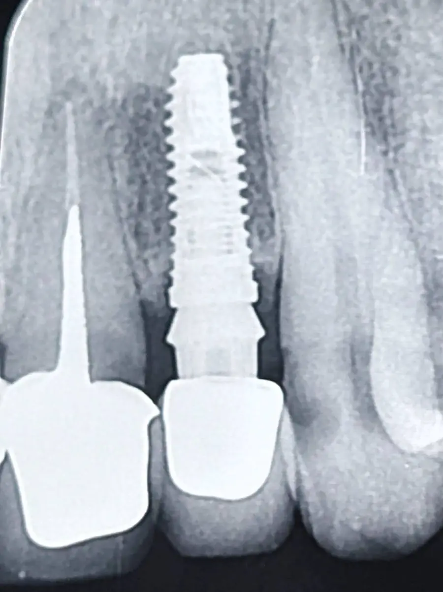

نسخه استخراجشده؛ ترجمه یا تأیید علمی انجام نشده است. وضعیت: captured
بیمار با یک روکش ایمپلنتی در ناحیهی قدامی آمده است. در بررسی رادیوگرافی، اختلاف قابل توجهی بین فینیشلاین اباتمنت و مارجین روکش دیده میشود: مارجین روکش پایینتر از فینیشلاین قرار گرفته و یک فاصلهی عمودی ایجاد شده است. این خطا از کجا آمده؟

تشخیص اینکه کدام، اولین قدم است، چون درمان این دو خطا کاملاً متفاوت است.
اگر خطا در جلسهی تحویل رخ دهد (مثلاً روکش بهدرستی ننشسته باشد)، دندانپزشک با حذف اینترفرنسها و تنظیم انسیزال یا سطح اکلوزال میتواند اکلوژن را برقرار کند.
در این کیس، شواهد نشان میداد روکش از ابتدا به همین فرم ساخته شده است: نه از نظر فریم و نه از نظر پرسلن، نشانهای از گیر یا تراش اضافی وجود نداشت. بنابراین منشأ خطا به احتمال زیاد در مرحلهی قالبگیری بوده است.
این احتمال وجود دارد که دندانپزشک در جلسهی قالبگیری، اباتمنت را بسته و قالب نهایی را تهیه کرده باشد، اما فینیشلاین بهدرستی در قالب ثبت نشده است. در نتیجه لابراتوار بر اساس اطلاعات ناقص، روکش را کوتاهتر از فینیشلاین ساخته است.
در رستوریشنهای ایمپلنتی، دقت در ثبت فینیشلاین صرفاً یک جزئیات تکنیکی نیست، بلکه نقطهای تعیینکننده در سلامت بلندمدت بافتهاست. خطایی که در قالبگیری رخ میدهد ممکن است تا زمان تحویل دیده نشود، اما اثر آن در بیولوژی بافتها کاملاً واقعی است.